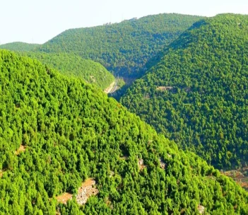

Ajloun Forests
Ajloun Forests are among the most beautiful natural areas in Jordan, located in the northern part of the country within Ajloun Governorate. These forests are known for their rich biodiversity and dense trees, making them a favorite destination for nature lovers.
The Beauty of Nature in Ajloun
Ajloun forests contain many types of trees such as oak, juniper, and maple. These trees provide dense shade and a breathtaking view throughout the year.
"If you want to escape the city's noise, all you have to do is visit Ajloun Forests to find tranquility in the embrace of nature."
Ajloun Nature Reserve
The Ajloun Forest Reserve was established in 1988 and is managed by the Royal Society for the Conservation of Nature. It is known for its rich ecological diversity and is home to many wild animals and rare plants.
Some helpful sites
Some photo
